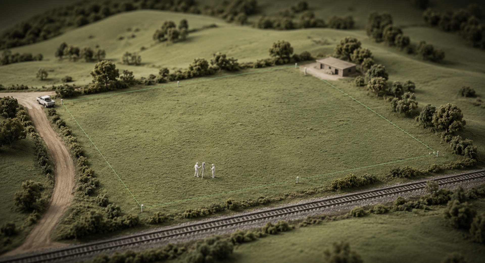
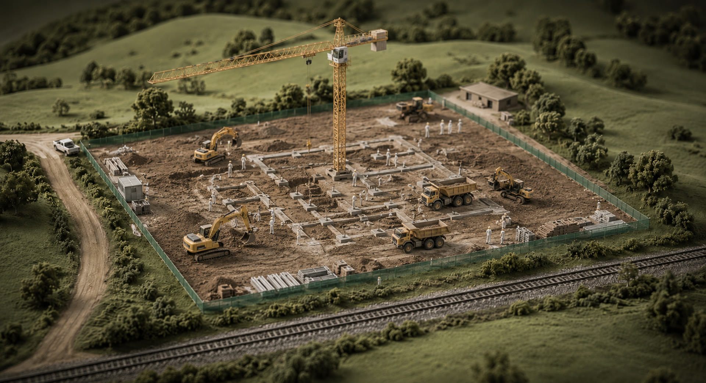
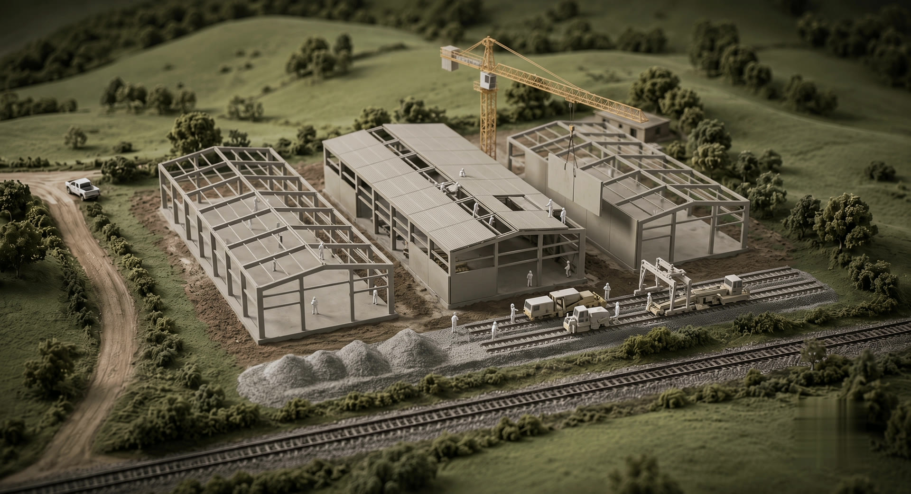
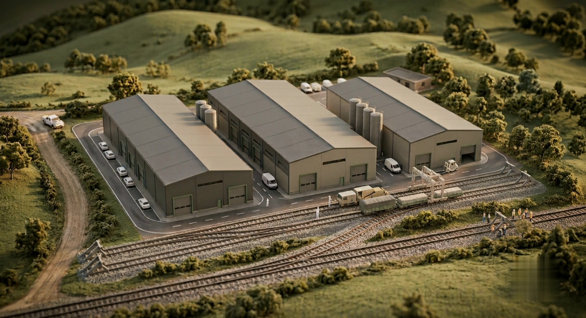
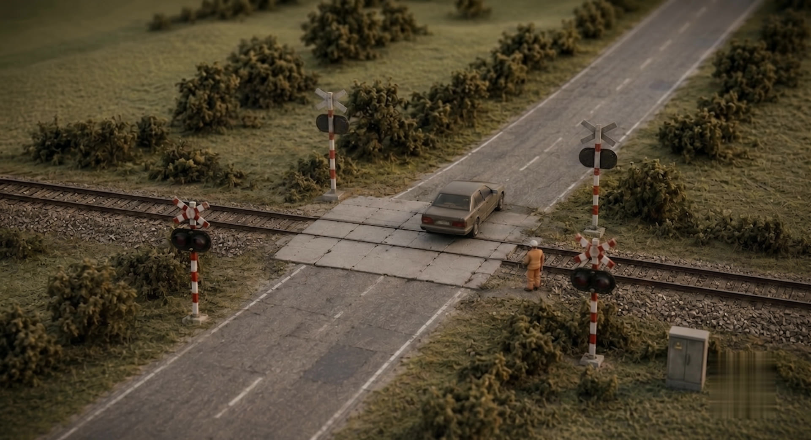
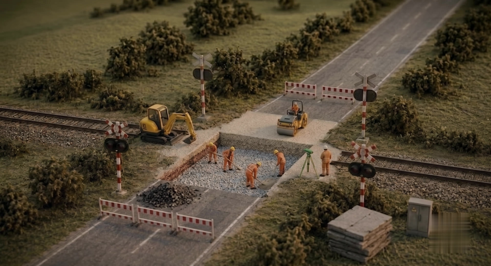
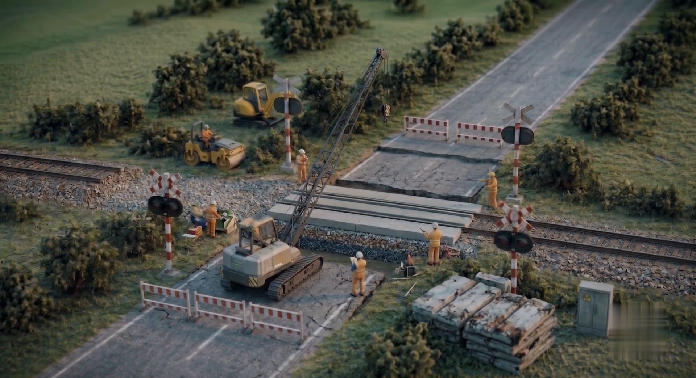
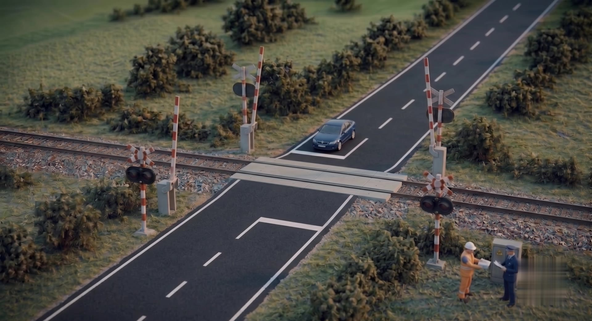

RIKIT sp. z o.o. — infrastruktura kolejowa
Budujemy przyszłość kolei.
Kompleksowa realizacja inwestycji: projektowanie i budowa bocznic kolejowych, przejazdy GTP, diagnostyka i remonty infrastruktury kolejowej. Od pierwszej kreski projektu po ostatni pomiar toru.
Pełen cykl. Jedna odpowiedzialność.
Drogi żelazne to nasz żywioł. Projektujemy i budujemy bocznice kolejowe, modernizujemy przejazdy i rozjazdy kolejowe, prowadzimy diagnostykę oraz kompleksowe remonty infrastruktury kolejowej.
Linia usług RIKIT
Cztery stacje.
Jedna podróż Twojej inwestycji.
-
Stacja 01
Projektowanie infrastruktury kolejowej
Projektowanie i budowa bocznic kolejowych, układów torowych i dróg żelaznych — koncepcja, projekt budowlany i wykonawczy, uzgodnienia z zarządcami sieci.
-
Stacja 02
Budowa infrastruktury kolejowej
Nawierzchnia torowa, rozjazdy kolejowe, przejazdy kolejowo-drogowe w technologiach GTP, CBP i Mirosław Ujski, odwodnienie i obiekty towarzyszące.
-
Stacja 03
Diagnostyka infrastruktury kolejowej
Bieżąca diagnostyka, przeglądy i badania roczne infrastruktury kolejowej: pomiary toru, oceny stanu technicznego bocznic, zalecenia utrzymaniowe.
-
Stacja 04
Remonty infrastruktury kolejowej
Kompleksowe remonty infrastruktury kolejowej i remonty bocznic kolejowych — również z wykorzystaniem materiałów staroużytecznych, gdy liczy się budżet.
Realizacja od zera — KM 02+400
Od łąki do bocznicy.




Technologia — KM 03+600
Przejazd GTP. Warstwa po warstwie.




Dlaczego RIKIT
Fundamenty są z nami na zawsze.
Solidność
Terminowo i zgodnie ze sztuką — od podtorza po odbiory.
Inżynieria
Własna kadra projektowa i wykonawcza z uprawnieniami kolejowymi.
Nowoczesność
Nowe technologie nawierzchni: GTP, CBP, systemy Mirosław Ujski.
Doświadczenie
Setki kilometrów torów, rozjazdów i przejazdów w portfolio zespołu.
Bezpieczeństwo
Kultura BHP i certyfikowane materiały — bez kompromisów.
Zaufali nam — KM 04+300
Jedziemy razem od lat.
Partnerzy przemysłowi
- Wagon Service Ostróda
- Cement Ożarów
- IKEA Industry Poland
- Woodeco Sp. z o.o.
- PKP Cargo
- Polregio
- MPEC Olsztyn
Generalni wykonawcy
- PPMT Sp. z o.o.
- ZRK-DOM Sp. z o.o.
- KB Pomorze
- Colas Rail Polska
- Budimex
- Skanska
- Strabag
Współpraca
- Asmo Sp. z o.o.
- Bahati Rail Sp. z o.o.
- Gór-Tor Sp. z o.o.
Stacja końcowa — KM 04+800
Porozmawiajmy
o Twojej inwestycji.
RIKIT sp. z o.o.ul. Gen. Dwernickiego 1
76-200 Słupsk
- NIP
- 8393213090
- REGON
- 384295101
- KRS
- 0000802278
- BDO
- 000150785